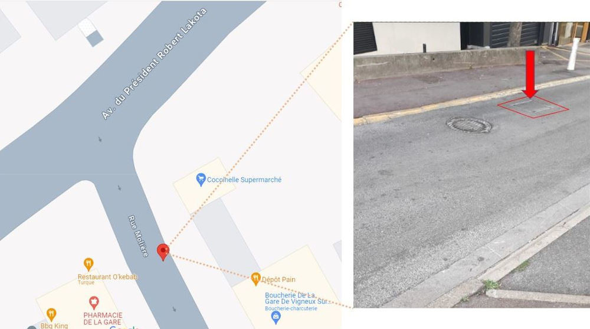

Nuisances sonores causées par une plaque sur la chaussée
Mis à jour le 4 Mars 2024
Status:
non résolu
Une plaque sur la chaussée, rue Molière, près de la gare de Vigneux-sur-seine claque
bruyamment à chaque passage de véhicule.
Localisation:
La plaque se situe sur la chaussée proche du 3 rue Molière.

Plaque sur chaussée:
Intensité du bruit:
L'intensité du bruit dépend du poids et de la vitesse des véhicules qui roulent sur la plaque.
A l'intérieur des logements, fenêtres ouvertes, le sonomètres mesure jusqu'à 66 dB.
Fréquence du bruit:
La plaque se trouvre à proximitée de la gare de Vigneux-sur-seine, il y a donc beaucoup de trafic routier.
Aux heures de pointe, il peut y avoir jusqu'à un dixaine de claquements par minute.
La nuit, souvent les voitures passent plus rapidement, ce qui cause un bruit plus fort.
Mairie de Vigneux-sur-seine
Les nuisances sonores causées par la plaque sur la chaussée au passage des voitures ont été signalées à la mairie de Vigneux-sur-seine en septembre 2022.